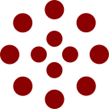

Много случаев мошенничества в последнее время!
Советую обратить внимание на свою подпись и ответить на вопрос – насколько она простая. Если есть основание, что она очень простая, то я рекомендую усложнить подпись. Здесь есть несколько условий. Усложнить — это не значит, что вы должны придумать разные излишние элементы, вензеля, закрутки, разные усложнения
Ваша подпись должна быть естественной. Например, можно просто написать фамилию в качестве подписи. Можно перед фамилией написать инициал имени, а потом дополнить фамилией. Поверьте, такую подпись намного легче анализировать эксперту, так как в ней уже будет достаточно ваших индивидуальных признаков. А подделать такую подпись будет практически невозможно. Также рекомендую с подписью на важных документах писать расшифровку подписи. И того же требовать от того, кто ставит подпись для вас.

К простой подписи часто прибегают те должностные лица, от которых многое зависит. Особенно следователи.
Очень много судей подписывается упрощенно, банковских работников. Но приходит на экспертизу такие подписи от людей, которые подписывают расписки, договоры. В этом тоже есть резон пересмотреть свою подпись. Как я уже написала, не придумывать ее, а увеличить по объему.
Это люди, которым подпись приходится ставить часто. Упрощенная подпись экономит силы и время (и оставляет возможность расписаться за тебя сослуживца, если ты сам это сделать забыл и ушел в отпуск. для личного пользования (взять кредит, купить квартиру и т. п.) эти люди имеют второй вариант подписи (сложный и полноценный). Тут сослуживцу и прочим проходимцам ловить нечего.
Уважаемая Лариса Анатольевна, я бы все подписи дополнительно заверял на документах с оттиском отпечатка пальца руки, где в последствии спорная данная подпись в документе о её принадлежности определенному лицу будет устанавливаться автоматизированной дактилоскопической информационной системой (АДИС) «Папилон» за считанные секунды. Легче на документе поставить оттиск отпечатка пальца руки, индивидуализирующего человека, специальным красителем, не пачкающим руки, чем пытаться усложнять или дополнительно напрягаться кому-то расшифровывать свою подпись фамилией с инициалами под документами.
Хорошее предложение
Вот, к примеру, смартфон. Не секрет, что у юристов, адвокатов информация относится к конфиденциальной. Но вот, к примеру, мне не получается оставить оттиск своего пальца, чтобы возможен был вход только по нему. Просто выдаёт сообщение что-то типа «у Вас нет отпечатков пальцев».
Второй этап
Уважаемый Олег Юрьевич, конечно мое предложение было основано на исторических данных, когда место подписи, лица оставляли оттиски отпечатков своих пальцев, и в то время никто не оспаривал.
Да и в настоящее время в некоторых странах до сих пор свою личность в документах удостоверяют с помощью отпечатка пальца руки. В наше время, с учетом постоянного совершенствования цифровых технологий, можно любую рукописную подпись отсканировать с помощью современных технологий, типа плоттера (графопостроителя), и затем нанести им же на любой документ сканированную подпись, чем и пользуются мошенники в отъеме у граждан движимого и недвижимого имущества, в том числе и денежных средств.Такую нанесенную подпись с помощью плоттера в документе можно установить только комплексным исследованием экспертами, проводящими почерковедческую экспертизу, техническую экспертизу документов и компьютерно-технической экспертизы. А такие комплексные экспертизы по спорным подписям с целью установления её исполнителя практически не проводятся, а в судах эти спорные подписи исполнителя в документах в основном устанавливают исключительно с помощью почерковедческих экспертиз, результат вывода эксперта-почерковеда которых заранее известен при указанных обстоятельствах, где эксперт мог совершить неумышленную, но способную привести к довольно печальным последствиям ошибку из-за отсутствия у него знаний о современных достижениях научно-технического прогресса в области робототехники, новых информационных, телеком-муникационных и компьютерных технологиях, которые могут использоваться и используются для подделки рукописных подписей и почерка.
Надо учитывать степень опьянения. Также здесь ещё важно какой рукой человек держит ручку, как держит ручку, с каким нажимом расписывается, с какой скоростью, есть ли помехи, которые «коверкают» подпись, «дёрнулась» ли по каким-либо причинам рука в момент, когда человек расписывался.
... и т.д. подробно см. статью.